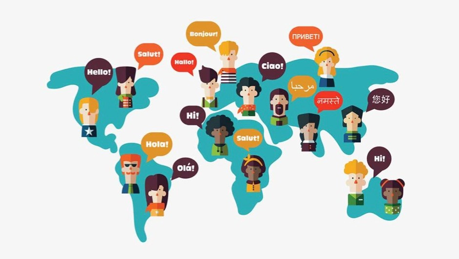
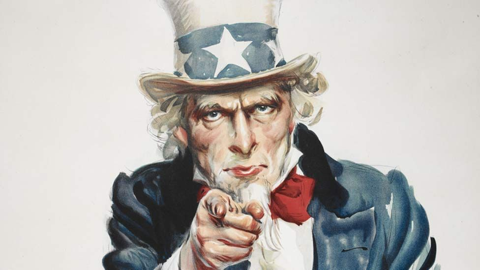

Totalitarianism
1984 is a political novel written with the purpose of warning readers in the West of the dangers of totalitarian government. Having witnessed firsthand the horrific lengths to which totalitarian governments in Spain and Russia would go in order to sustain and increase their power, Orwell designed 1984 to sound the alarm in Western nations still unsure about how to approach the rise of communism. In 1949, the Cold War had not yet escalated, many American intellectuals supported communism, and the state of diplomacy between democratic and communist nations was highly ambiguous. In the American press, the Soviet Union was often portrayed as a great moral experiment. Orwell, however, was deeply disturbed by the widespread cruelties and oppressions he observed in communist countries, and seems to have been particularly concerned by the role of technology in enabling oppressive governments to monitor and control their citizens.
In 1984, Orwell portrays the perfect totalitarian society, the most extreme realization imaginable of a modern-day government with absolute power. The title of the novel was meant to indicate to its readers in 1949 that the story represented a real possibility for the near future: if totalitarianism were not opposed, the title suggested, some variation of the world described in the novel could become a reality in only thirty-five years. Orwell portrays a state in which government monitors and controls every aspect of human life to the extent that even having a disloyal thought is against the law. As the novel progresses, the timidly rebellious Winston Smith sets out to challenge the limits of the Partys power, only to discover that its ability to control and enslave its subjects dwarfs even his most paranoid conceptions of its reach. As the reader comes to understand through Winston's eyes, The Party uses a number of techniques to control its citizens, each of which is an important theme of its own in the novel. (SparkNotes)
"WAR IS PEACE. IGNORANCE IS STRENGTH. FREEDOM IS SLAVERY."
"Big Brother is watching you."
Language
One of Orwell's most important messages in 1984 is that language is of central importance to human thought because it structures and limits the ideas that individuals are capable of formulating and expressing. If control of language were centralized in a political agency, Orwell proposes, such an agency could possibly alter the very structure of language to make it impossible to even conceive of disobedient or rebellious thoughts, because there would be no words with which to think them. This idea manifests itself in the language of Newspeak, which the Party has introduced to replace English. The Party is constantly refining and perfecting Newspeak, with the ultimate goal that no one will be capable of conceptualizing anything that might question the Party's absolute power.
Interestingly, many of Orwell's ideas about language as a controlling force have been modified by writers and critics seeking to deal with the legacy of colonialism. During colonial times, foreign powers took political and military control of distant regions and, as a part of their occupation, instituted their own language as the language of government and business. Postcolonial writers often analyze or redress the damage done to local populations by the loss of language and the attendant loss of culture and historical connection. (SparkNotes)
"If thought corrupts language, language can also corrupt thought."
"It is a beautiful thing, the destruction of words."

Identity
While the Party's primary tool for manipulating the populace is the control of history, they also control independence and identity. For example, the basic traits of establishing one's identity are unavailable to Winston and the other citizens of Oceania. Winston does not know how old he is. He does not know whether he is married or not. He does not know whether his mother is alive or dead. None of his childhood memories are reliable, because he has no photos or documents to help him sort real memories from imagined ones. Instead of being unique individuals with specific, identifying details, every member of the Outer Party is identical. All Party members wear the same clothing, smoke the same brand of cigarettes, drink the same brand of gin, and so forth. As such, forming a sense of individual identity is not only psychologically challenging, but logistically difficult.
Most of Winston's significant decisions can be interpreted as attempts to build a sense of identity. His decision to purchase a diary and begin recording his thoughts is an attempt to create memory and history. His decision to purchase the paperweight is driven by a desire to have something of his own that represents a time before the Party. Winston's sexual relationship with Julia and their decision to rent an apartment where they can spend time together represent dangerous crimes in the world of 1984. In deciding to pursue a relationship with Julia, Winston asserts his independence and further establishes his identity as an individual who resists the Party's control. Ultimately, though, Winston's attempts to maintain his independence and create a unique identity are no match for the Party. Winston's experiences in the Ministry of Love represent the complete disassembly and destruction of all aspects of his individuality. When he is returned to society he has lost all independence and uniqueness, and has become part of the Party's faceless collective. (SparkNotes)
"WAR IS PEACE. IGNORANCE IS STRENGTH. FREEDOM IS SLAVERY."
"Big Brother is watching you."

Memory
The Party seeks to control everything -past, present, and future. Another effort towards attaining that goal is to control its constituents' memory. Without memory, the people cannot know the past. Without memory, the Party is able to control history. By controlling the past, the Party also controls the present - because its constituents will accept everything the Party says. In order to control the collective memory of its constituents, the Party forbids its members to keep written records of their lives, and mandates that any photographs or documents be destroyed through "memory holes" placed throughout Oceania. Since memory is unreliable unless corresponding reality may confirm it, over time, reality becomes fuzzy at best, and Party members are soon willing to believe whatever the Party tells them. Thus, the Party manipulates the past in order to control the present, thanks to our ever-failing memory. (Shmoop)
"WAR IS PEACE. IGNORANCE IS STRENGTH. FREEDOM IS SLAVERY."
"Big Brother is watching you."
Propaganda
The Party barrages its subjects with psychological stimuli designed to overwhelm the mind's capacity for independent thought. The giant telescreen in every citizen's room blasts a constant stream of propaganda designed to make the failures and shortcomings of the Party appear to be triumphant successes. The telescreens also monitor behavior—everywhere they go, citizens are continuously reminded, especially by means of the omnipresent signs reading “BIG BROTHER IS WATCHING YOU,” that the authorities are scrutinizing them. The Party undermines family structure by inducting children into an organization called the Junior Spies, which brainwashes and encourages them to spy on their parents and report any instance of disloyalty to the Party. The Party also forces individuals to suppress their sexual desires, treating sex as merely a procreative duty whose end is the creation of new Party members. The Party then channels people's pent-up frustration and emotion into intense, ferocious displays of hatred against the Party's political enemies. Many of these enemies have been invented by the Party expressly for this purpose. (SparkNotes)
"The Party is always right"
"Big Brother is watching you."

Technology
By means of telescreens and hidden microphones across the city, the Party is able to monitor its members almost all of the time. Additionally, the Party employs complicated mechanisms (1984 was written in the era before computers) to exert large-scale control on economic production and sources of information, and fearsome machinery to inflict torture upon those it deems enemies. 1984 reveals that technology, which is generally perceived as working toward moral good, can also facilitate the most diabolical evil. (SpartNotes)